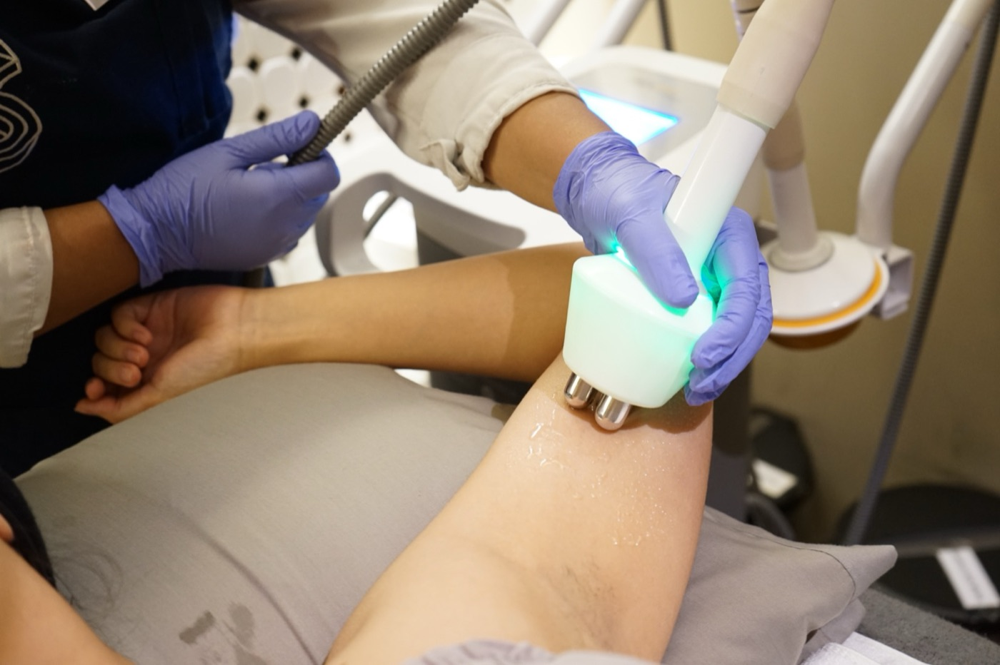

Kulit yang lebih baik dimulai dari konsultasi dokter. Gratis.
Pilih concern-mu. Dokter kami yang merekomendasikan treatment-nya. Harga terbuka, sama di semua klinik.

Siklus Skin Habit™ · Satu siklus, dokter di tengahnya
Setiap pelanggan Surface bergerak dalam siklus yang sama, di jalur mana pun. Dokter menilai di setiap putaran; kamu hanya perlu datang sesuai jadwal.
Apa yang ingin kamu perbaiki?
Tiga concern, masing-masing tiga pilihan treatment. Kamu memilih concern, dokter merekomendasikan treatment-nya.
Jerawat & komedo
Jerawat adalah keluhan nomor satu di Surface. Kami mulai dari pembersihan dalam, lalu dokter menambahkan peeling atau tindakan sesuai kondisi kulitmu.
Kusam, flek & warna tidak rata
Kusam dan flek adalah keluhan kedua terbanyak. Facial H2O membuka jalan, lalu peeling dan laser oleh dokter meratakan warna kulit.
Bekas jerawat & pori
Tekstur adalah tahap setelah warna kulit rata: pori besar, kekasaran, dan bekas jerawat yang cekung. Facial tidak menjangkaunya; resurfacing, microneedling, dan subsisi oleh dokter yang bekerja.
Sensitif, kemerahan & barrier
Kulit yang mudah merah dan perih adalah pelanggan yang berbeda: sering belum boleh microneedling atau peeling kuat. Calm menenangkan dan menguatkan barrier dulu, dan menjadi pintu masuk alami sebelum jalur lain.
Kendur, garis & kontur
Untuk kulit yang mulai kendur atau kontur wajah yang ingin lebih tegas. Dimulai dari radiofrekuensi tanpa downtime, sampai HIFU oleh dokter.
Skin booster & Botox
Pintu untuk yang sudah tahu ingin injeksi. Dua rak: skin booster untuk kualitas kulit, dan botulinum toxin untuk garis dinamis. Hanya dokter yang memilih bahan dan dosis, dan harga disampaikan sebelum kamu memutuskan.
Satu harga untuk mulai: Rp 799.000
Level Start di setiap jalur: facial oleh terapis ditutup satu langkah dokter, satu kunjungan, satu harga. Atau program bulanan.
Mulai dari Rp 799.000
- Clear StartSuper Facial + LHALA Peel oleh dokterRp 799.000
- Tone StartLaser Facial + LHALA Peel oleh dokterRp 799.000
- Texture StartNew Skin Here (diamond peel tanpa ekstraksi) + LHALA Peel oleh dokterRp 750.000
- Calm StartOxy Facial Hydrating, protokol kulit sensitif + Konsultasi dokterRp 799.000
- Tighten StartTighten & Contour RF (wajah) + Konsultasi dokterRp 799.000
- Enhance StartKonsultasi dokter gratis + Foto 3 sudut + Rencana booster atau toxin tertulis dengan hargaGratis
Harga yang sama untuk semua pelanggan, baru maupun lama. Texture Start Rp 750.000; Enhance mulai dari konsultasi gratis.
Booking level StartSkin Habit Plan
- Setiap bulan: 1 facial Hydraderm atau H2O
- Setiap 3 bulan: 1 LHALA Peel oleh dokter
- Konsultasi dokter gratis sepanjang program
Minimal 3 bulan, dibayar bulanan. Sesi tidak diakumulasi lebih dari satu bulan.
Tanya Skin Habit PlanAlat dan brand yang kami pakai
Kami menyebut nama alatnya. Pembuat, negara asal, dan sertifikasinya ada di halaman Alat & brand.


Dokter kami
Setiap treatment dengan alat, peeling medis, atau injeksi dilakukan oleh dokter. Konsultasi pertama selalu gratis.
FOTO SHOOT: dokter dan pelanggan di meja konsultasi, lampu analisa kulit. 1600×1000.
dr. Siti Aisyah Devitri, M.Kes. Est
- Dokter umum, Universitas Padjadjaran Bandung, 2004
- Magister Aesthetic & Anti-aging Medicine, Universitas Jenderal Achmad Yani, 2022
- Pengalaman 15+ tahun
- Pelatihan laser, skin booster, HIFU, botulinum toxin · IDI, Perdesti
Dokter estetika yang berkomitmen pada perawatan kulit yang personal: memahami kondisi, kebutuhan, dan tujuan setiap kulit untuk menyusun rencana perawatan yang tepat.
@devi_sitiaisyahdevitridr. Kharisma Pipit
- Dokter umum, UPN Veteran Jakarta
- Pengalaman 15+ tahun
- Pelatihan skin booster, botulinum toxin, laser
- Anggota IDI
Dokter estetika yang berkomitmen membantu kulit menjadi lebih sehat sesuai kebutuhan pasien, dengan ilmu dan teknologi medis yang aman dan mengikuti perkembangan terbaru.
@kharisma_pipitKata mereka
Sejak 2014 kami sudah membantu ribuan orang dengan jerawat, flek, dan kulit yang mulai kendur. Cerita di bawah dibagikan dengan izin mereka; ulasan lengkap ada di Google untuk setiap klinik.
Ulasan Google per klinik
Setiap klinik punya halaman ulasan Google sendiri. Baca langsung dari pelanggan.
Widget rating Google: isi google_place_id per klinik untuk tautan ulasan; rating ditampilkan setelah dikonfirmasi dari Google Business Profile.
Dari Instagram kami
Mulai dari konsultasi dokter. Gratis.
Chat kami, sebutkan concern dan klinik terdekat. Tim kami carikan jadwal konsultasi dokter, dan dokter yang menentukan level perawatanmu.